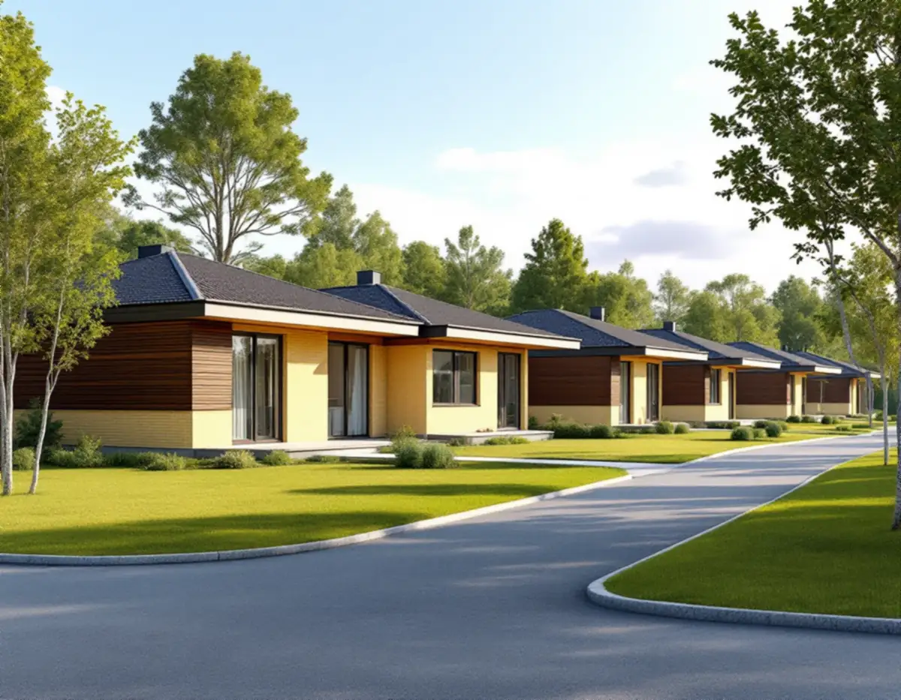
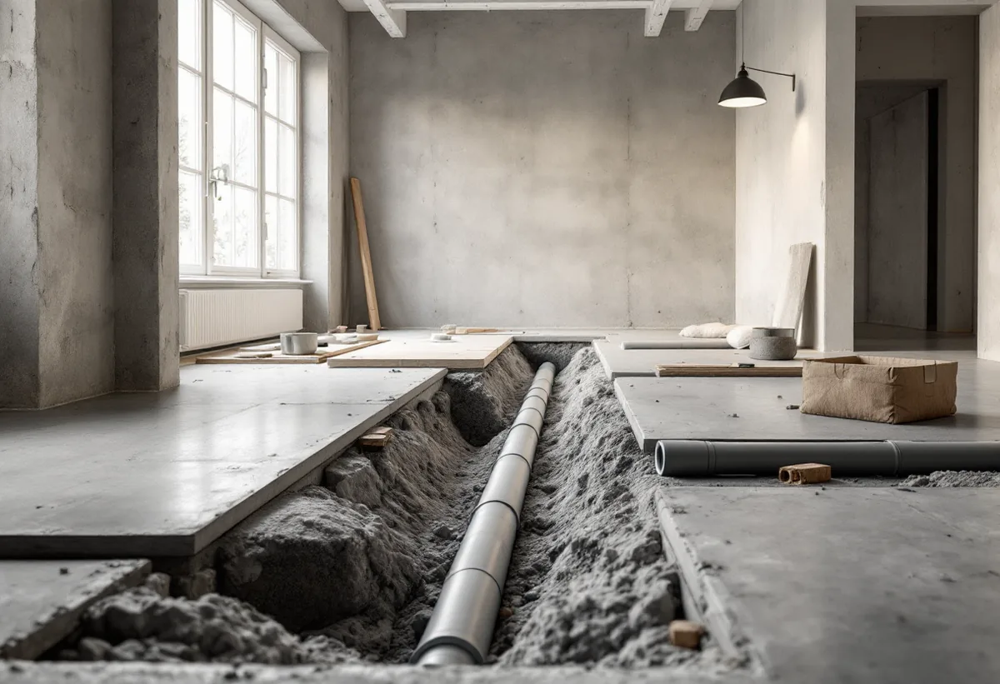

Platsbesök
Vi går igenom planlösningen, stammarna och grunden.
I en totalrenovering vill många flytta kök och badrum, och då dras nya rör genom huset och ibland genom grunden. Geal Entreprenad AB totalrenoverar villor och radhus i Järfälla och håller ordning på både anmälan och radonfrågan.

Järfällas kulturmiljöplan bygger på en inventering som Stockholms läns museum gjorde på kommunens uppdrag. Boken Järfälla kulturhistoriska miljöer kom ut 1991 och redovisar 58 miljöer och objekt, från Säby gård från 1650-talet till Dressyrvägen med småhus från 1960-talet.
Planen påpekar att det för en lekman inte är lika självklart att ett 1960-talsområde är en utvald miljö som en herrgård. Men båda berättar om Järfällas historia, och planen ska ge stöd när varsamhetsreglerna tillämpas vid bygglov.

Järfälla kommun ger exempel på åtgärder där du behöver skicka in en anmälan och invänta startbesked: att installera stammar i nya lägen, och att installera eller göra en större ändring av en anläggning för vattenförsörjning eller avlopp i en byggnad eller på en tomt.
Till anmälan hör en situationsplan där det framgår i vilken byggnad ändringen sker, en planritning om ändringarna görs inne i huset och ett förslag till kontrollplan. Flyttas badrummet till andra sidan huset är det alltså inte bara en inredningsfråga. Fall, ventilation och var stammen kan anslutas avgör också var det nya badrummet kan ligga, och vi ritar in det innan anmälan skickas.
Kommunen skriver att radon i bostäder kan komma från marken, från den egna brunnens vatten eller från byggnadsmaterial, så kallad blå lättbetong. Järfälla har huvudsakligen normal- och lågriskmark, men små lokala variationer gör det olämpligt att generalisera riskbedömningen områdesvis.
Kommunen rekommenderar en ny radonmätning om du har gjort förändringar i husgrunden, till exempel rörgenomdragningar, eller förändrat husets ventilation. Båda händer ofta i en totalrenovering. Vi tätar genomföringarna noga, och efter renoveringen bör du mäta igen under nästa eldningssäsong.
Mätningen ska enligt kommunen göras under flera månader inom perioden 1 oktober–30 april. En korttidsmätning ger bara indikativa värden och har stor felmarginal. Referensvärdet för radon i inomhusluften i bostäder är 200 becquerel per kubikmeter som årsmedelvärde.
Kommunen rekommenderar också en ny mätning om det har gått mer än tio år sedan den senaste. Blir värdet för högt är det ofta förhållandevis enkelt och kostnadseffektivt att åtgärda, enligt kommunen.
Ska kök och vardagsrum öppnas mot varandra krävs anmälan om väggen är bärande. Kommunen påpekar att ritningar kan vara ofullständiga och att det inte är säkert att de som byggde följde dem, och hänvisar till en konstruktör vid osäkerhet.
Konstruktionsritningen ska upprättas av en sakkunnig konstruktör, och den lämnas in tillsammans med planritning och förslag till kontrollplan. Om köket i sig kan du läsa under köksrenovering i Järfälla, och om badrummet under badrumsrenovering i Järfälla.
Vi går igenom planlösningen, stammarna och grunden.
Stammar i nya lägen och bärande ändringar anmäls med kontrollplan.
Varje del och varje moment står för sig.
Genomföringar i grunden tätas när rören är dragna.
Kontrollplanen fylls i och lämnas till kommunen.
Mät under eldningssäsongen efter renoveringen.
För ett småhus räknar Skatteverket bland annat att riva väggar och bygga om planlösningen, arbeta med tilläggsisolering, sätta kakel och klinker och göra förbättringsarbeten som rotarbete. Radonsanering kan ge avdrag, men inte själva mätningen.
Avdraget är högst 30 procent av arbetskostnaden och högst 50 000 kronor per person och år, och äger ni huset två kan båda göra avdrag. Material och resor ger inget avdrag. Geal drar av beloppet direkt på fakturan.
Hur långt kök och badrum flyttas, om grunden måste öppnas, bärande ändringar, el och VVS och vilka ytskikt du väljer. Läs mer under villarenovering. Efter ett gratis platsbesök får du ett skriftligt kostnadsförslag.
Renovera hela huset eller lägenheten.
Villarenovering →Takbyte, takbesiktning och plåtarbeten.
Takläggare i Järfälla →Jakobsberg, Viksjö och Kallhäll.
Takrenovering i Järfälla →Förråd, garage och ateljé som blir bostad.
Attefallshus i Järfälla →Planbesked, extra bostad och ansvar.
Byggföretag i Järfälla →Underhållsmålning i rätt tid.
Fasadmålning i Järfälla →Kedjehus, sekelskiftesvillor och parstuga i Stäket.
Fasadrenovering i Järfälla →Bruksvillor, radhus och 70-talsfönster i Järfälla.
Fönsterbyte i Järfälla →Bottenstycken, bleck och vita omfattningar.
Fönsterrenovering i Järfälla →Kedjehus, egnahem och gamla golvskikt.
Golvläggare i Järfälla →Slipa och behandla trappan i huset.
Golvslipning i Järfälla →Kedjehus, radhus och souterräng.
Köksrenovering i Järfälla →Stuprör, skärmtak och plåttak i Järfälla.
Plåtslagare i Järfälla →Förgårdar, förråd och ytterdörrar.
Snickare i Järfälla →Lovfritt takbyte och papperen du sparar.
Takbyte i Järfälla →Ny tapet på skivväggar i radhus.
Tapetsering i Järfälla →Lovfritt, avvikelser och Kallhälls villor.
Tillbyggnad i Järfälla →Radhus, kedjehus och souterränghus.
Badrumsrenovering i Järfälla →Putsade radhus, kedjehus och villor i Järfälla.
Målare i Järfälla →